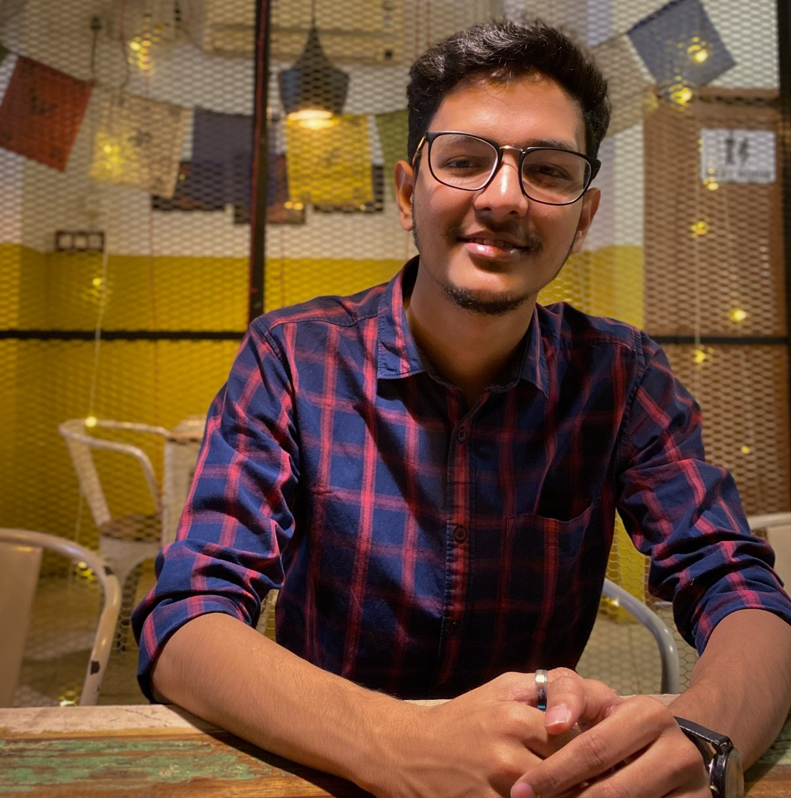

Neel Sagar Kalita

Career Objective:
To pursue a challenging career and be a part of progressive organization that gives a scope to enhance my growth of the organization knowledge and utilizing my skills towards.
Education:
- Bachelor of Engineering, Civil Branch- Girijananda Chowdhury University(2019-2023)
Projects and Trainings:
- Internship at Bridge construction under Public Works Department
- Internship at Water supply treatment plant under Public Health Engineering Department
- Project on THE SEISMIC BEHAVIOUR OF DIFFERENT TYPES OF REINFORCED CEMENT CONCRETE-BRACING SYSTEM IN A REINFORCED CONCRETE STRUCTURE.
- Project on PLANNING, ANALYSING AND DESIGNING OF G+2 RESIDENTIAL BUILDING OF 3BHK WITH 3 BATHROOMS
Soft Skills:
- Communication
- Leadership
- Problem Solving
- Team management
Hard skills
- AutoCAD: ⭐⭐⭐⭐
- SAP2000: ⭐⭐⭐
- Adobe Photoshop & Premier Pro: ⭐⭐⭐
- Microsoft Office, Powerpoint & Excel: ⭐⭐⭐⭐⭐
Achievements
- Completed my Visharad degree in Tabla.
- Selected as Child Scientist for presenting the project titled “Conservation of Energy by Using special Chulla.”